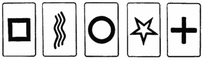

(engl. Zener cards). Psykologi Karl Zenerin (1903–1963) kehittämiä kortteja käytettiin ensimmäisen kerran 1930-luvulla parapsykologi Joseph B. Rhinen ESP-tutkimuksissa Duke Universityssä. Tästä syystä Zener-kortteja kutsutaan joskus myös ESP-korteiksi.
Zener-korttipakkaan kuuluu 25 korttia. Kortit jakautuvat viiteen viiden symbolin sarjaan. Symbolit ovat tähti, neliö, ympyrä, risti ja aaltoviivat. Kuvioiden valintaperusteena oli niiden erottuvuus toisistaan.

Zener-korteillakaan ei ole saatu tutkimustuloksia, jotka toistuvasti kertoisivat aistien ulkopuolisesta havaitsemisesta. Jo muutaman vuoden tutkimusten jälkeen Zener itsekin pettyi parapsykologiaan.
Vuonna 1967 julkaistiin puolestaan Helsingin yliopistossa väitelleen Gösta Lindholmin (1921–1987) väitöskirja. Siinä Lindholm osoitti, että koehenkilöt suosivat tiettyjä kuvioita, kuten aaltoviivoja sekä ympyrää, minkä seurauksena näiden kuvioiden todennäköisyys tulla valituksi poikkeaa sattumasta. Sattumasta poikkeavat tulokset eivät siis kerrokaan ESP:stä, vaan koehenkilöiden mieltymyksistä. Tämä tekee Zener-korteista ja niillä tehdyistä tutkimuksista arvottomia parapsykologialle.
Brittiläinen parapsykologi Harry Price esitteli Zener-korttien tapaiset Telepatha-kortit teoksessaan Fifty years of psychical research (1939).
Katso: Parapsykologia; Psi; Rhine, Joseph Banks.
Kirjallisuutta: Aho 1993.